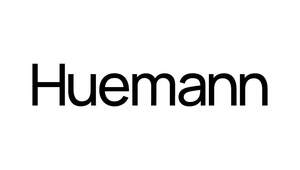

Trade Mark Journal No.2025/020 16 May 2025
UK00004198184 2 May 2025 (35,42)

- Class 35
- Marketing; Advertising and marketing; Advertising and marketing consultancy; Promotional marketing; Influencer marketing; Advertising and marketing services; Product marketing; Marketing consultancy; Digital marketing; Advertising, marketing and promotion services; Marketing, advertising and promotion services; Advertising, marketing and promotional services; Advertising, promotional and marketing services; Marketing, advertising, and promotional services; Marketing research; Online marketing; Marketing services; Internet marketing; Business marketing consultancy; Financial marketing; Marketing studies; On-line advertising and marketing services; Targeted marketing; Business marketing services; Advertising copywriting; Marketing information; Investigations of marketing strategy; Direct marketing; Promotion, advertising and marketing of on-line websites; Planning of marketing strategies; Marketing advice; Consultancy services relating to advertising, publicity and marketing; Marketing research services; Event marketing; Research services relating to advertising and marketing; Marketing management advice; Design of marketing surveys; Marketing agency services; Promotion [advertising] of business; Business marketing consulting services; Development of marketing concepts; Advertising, marketing and promotional consultancy, advisory and assistance services; Direct marketing services; Copywriting for advertising and promotional purposes; Creative marketing plan development services; Promotional marketing services using audiovisual media; Business marketing consultation services; Development of marketing strategies and concepts; Advertising services for the promotion of e-commerce; Planning services for marketing studies; Marketing research and analysis; Marketing research or analysis; Providing marketing consulting in the field of social media; Business advice relating to marketing; Preparation of marketing surveys; Advertising and marketing services provided by means of social media; Professional consultancy relating to marketing; Advertising; Advertising and marketing services provided via communications channels; Analysis of marketing trends; Market research and marketing studies; Providing business marketing information; Brand creation services (advertising and promotion); Consulting services relating to marketing; Developing promotional campaigns for business; Providing advice in the field of business management and marketing; Copywriting; Advertising and promotion services; Marketing services in the field of travel; Advertising and publicity; Publicity and advertising; Advertising and promotional services; Promotional and advertising services; Promotional advertising services; Publicity and sales promotion; Conducting marketing studies; Preparation of marketing plans; Marketing services in the field of dentistry; Marketing services in the field of restaurants; Market research for advertising; Marketing services in the field of web site traffic optimization; Real estate marketing analysis; Real estate marketing; Development of promotional campaigns; Promotion [advertising] of travel; Development of advertising concepts; Preparation of advertising campaigns; Planning services for advertising; Design of advertising brochures; Preparation of reports for marketing; Digital advertising services; Brand positioning; Brand strategy services; Brand positioning services; Advertising services to create corporate and brand identity; Brand creation services; Advertising services to create brand identity for others; Product merchandising; Product launches; Direct mail advertising to attract new customers and to maintain the existing customer base; Design of advertising logos; Product launch services; Business research for new businesses; Marketing research in the fields of cosmetics, perfumery and beauty products; Advertising services relating to the commercialization of new products; Market campaigns; Developing promotional campaigns for businesses; Direct market advertising; Affiliate marketing; Design of advertising materials; Advertising of commercial or residential real estate; Corporate identity services; Advertising services for the promotion of beverages; Online retail store services relating to cosmetic and beauty products.
- Class 42
- Interior design; Graphic design; Design of artwork; Packaging design; Design of packaging; Design of typefaces; Visual design; Design consultancy; Website design; Brochure design; Website design and development; Design of products; Graphic art design; Interior design services; Graphic design services; Logo design services; Design services; Design of websites; Illustration services (design); Shop design; Graphic arts design; Design (Graphic arts -); Graphic illustration design services; Website design consultancy; Design services (Packaging -); Design services for packaging; Graphic design of promotional materials; Graphic illustration design; Graphic designing; Services of a graphic designer; Graphic art services; Industrial and graphic art design; Graphic arts designing; Designing (Graphic arts -).
Rachel Taylor